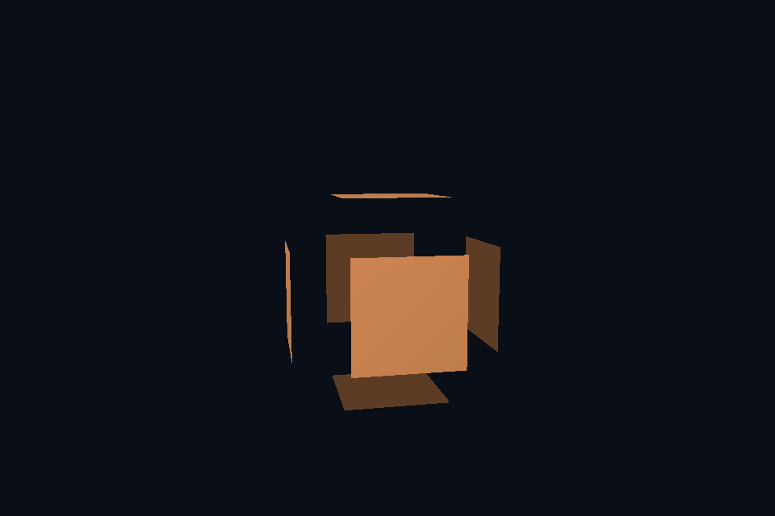

第 30 课：几何着色器
课程首页 · 上一课 · 下一课
目标与运行
cmake --preset opengl
cmake --build --preset opengl-debug --target 30_geometry --parallel 4
.\OpenGL\build\bin\Debug\30_geometry.exe
预期画面：立方体的各三角形沿面方向周期性向外分离。
相机：W/A/S/D 移动，Q/E 升降，按住右键转向，Esc 退出。
代码阅读顺序
explode.vert → explode.geom → surface.frag
从本课 main.cpp 进入；公共工具在 common，GLSL 在 shaders。先画出每一遍读什么、写什么，再逐个展开辅助类。
原理与实现
几何着色器位于顶点之后、光栅化之前，按图元接收数据。本课 layout(triangles) in，每次接收三个顶点；输出 triangle_strip，max_vertices=3，逐个 EmitVertex，再 EndPrimitive。
顶点阶段暂时把局部位置放在 gl_Position。几何阶段根据三点叉乘得到面方向，沿方向平移顶点，再应用 model/view/projection。这样在局部或世界空间计算几何方向，避免错误地在透视裁剪空间直接求法线。
原顶点法线用于光照，面方向用于分离位移，二者用途不同。对于带平滑法线的模型，分离会出现接缝，这是本课故意展示的效果。geometryStage 将几何 shader 加入程序重新链接，并检查链接日志。
几何 shader 能做教学上的法线可视化、简单图元扩展等，但不保证比其他方案快。大量放大图元可能触发严重吞吐瓶颈。粒子 billboard 的常见实现是顶点 shader 加实例化，第 32 课采用该方式。
修改练习
把位移改成恒定；输出线段可视化每个面的法线；比较 face normal 与 interpolated normal。
修改后重新执行 cmake --build --preset opengl-debug --target 30_geometry --parallel 4。GLSL、模型、图片会复制到程序旁的 shaders/assets 目录。源文件应修改教程根目录下的版本，运行目录的副本会被下一次构建覆盖。
自测与参考答案
为什么不直接对 gl_Position.xyz 的透视后数据做世界方向计算？
它们已经不在统一欧氏坐标空间，透视和 w 会扭曲长度与角度。
检查与排错
运行 30_geometry.exe --smoke 可执行确定时间的四帧渲染检查。重要技术开关还可用 --smoke --variant --capture 与默认抓图对比。共享工具会检查 GL 错误、非背景像素和图像动态范围，但这不能代替人工核对技术含义。参见 进阶排错。
参考截图
以下为课程自带素材、固定时间 1 秒时的实际渲染；你的相机与操作改变后画面会不同。

深入学习：数据、接口与执行
geometry shader 按输入三角形运行，计算面方向后逐点 EmitVertex，最后 EndPrimitive。它介于顶点处理与光栅化之间，不是每片元执行的特效。
配套精讲：三 API 对照 · 三角形、管线与着色器。先读概念与参数选择，再返回本课实现核对，不必一次展开所有公共类。
本课的真实源码切片
来自 OpenGL/lessons/30_geometry/main.cpp，第 5—26 行；这是现有实现的局部摘录，末尾可能处于函数中间，不是可单独编译的完整程序。
int main(int argc, char** argv) try {
App app(argc, argv, "30_geometry - OpenGL Course");
Shader shader(app, "explode.vert", "surface.frag");
geometryStage(shader, app, "explode.geom");
Mesh mesh(cube());
Camera camera;
glEnable(GL_DEPTH_TEST);
while (app.begin()) {
camera.update(app);
app.clear();
shader.use();
surfaceDefaults(shader);
cameraUniforms(shader, app, camera);
shader.set("time", app.time());
shader.set("model", glm::rotate(glm::mat4(1), app.time() * .2f, glm::vec3(0, 1, 0)));
mesh.draw();
app.end();
}
return 0;
} catch (const std::exception& e) {
return failure(e);
}
同主题跨 API 导航
以下是同主题参考；场景、功能完成度和版本基线可能不同，具体边界见对照章节。
先预测，再验证
想提高细分密度，只增加 max_vertices 就会自动生成新几何吗？
参考推导：不会。声明仅给出上限，还需实际发射顶点；本例也不是 tessellation 管线。
在一次实验中只改一个因素，记录预测、实际画面/日志和原因。检查已有 smoke 是否仍通过；图形调试器里再核对本次 draw 的实际输入/输出，不能仅凭进程正常退出下结论。